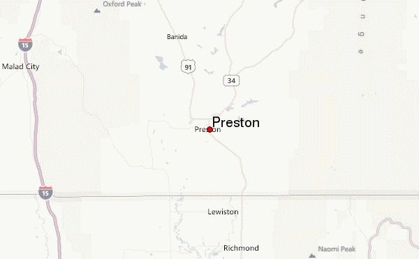

Preston
Weather Summmary
Currently:
Temperature:
Wind Chill:
Humidity:
Wind Speed:
fill
fill° F
° F
fill
fill mph
5 Day Forecast
Monday

65° F
Tuesday
60° F
Wednesday

46° F
Thursday
48° F
Friday
64° F

Windy Weather
By Wally Walden
What do you do when the weather is windy? Well, you have plenty of options! There is, of course, the classic activity of flying kites. It doesn't matter if it is something fancy or something plain, flying a kite can relax the mind and help one to find enjoyment in the wind. Another fantastic option is to go sailing! Though, this is only recommended on warmer days. Avid or determined sailors will take any opportunity they get, however!


Contact Information
Weather's Detrimental Determination
5555 S 5th St
(555)555-5555
wdd@*****.com